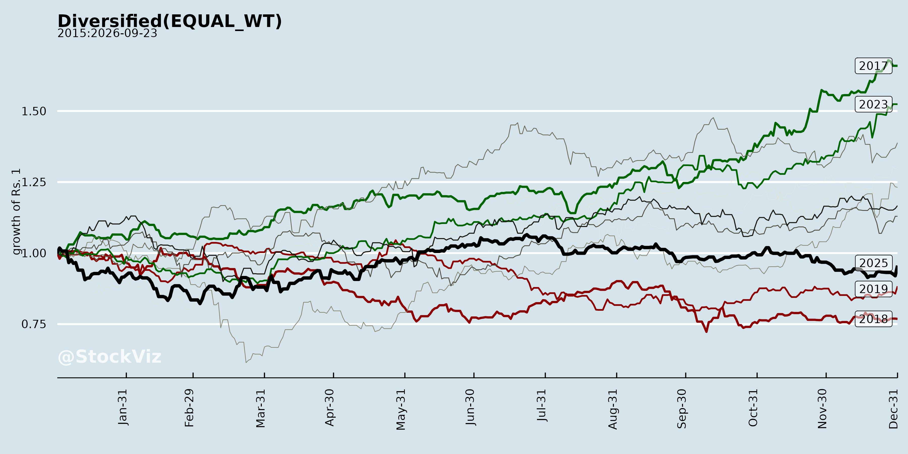
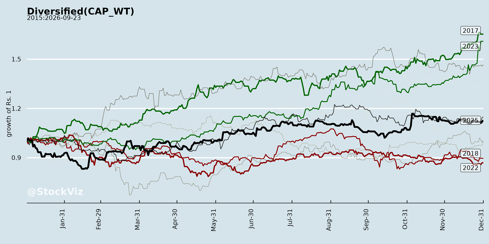
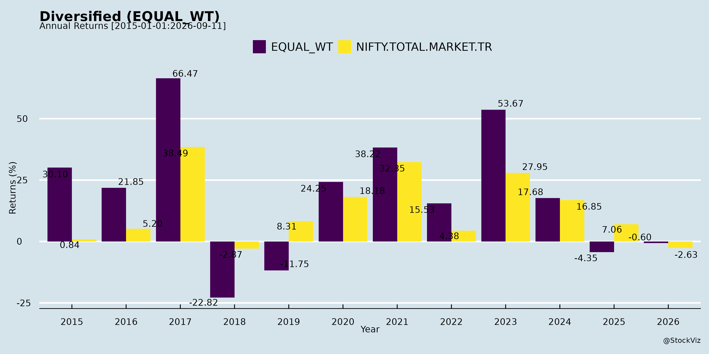
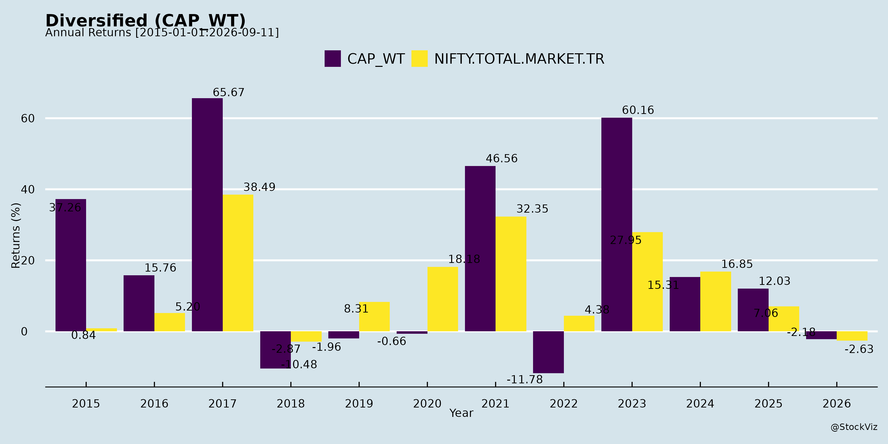
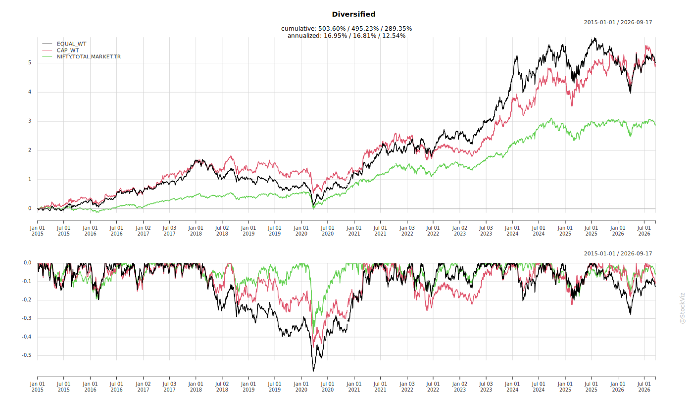
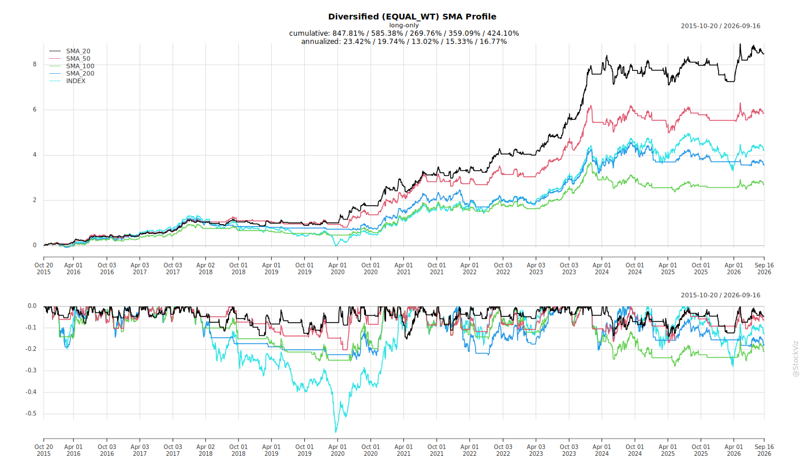
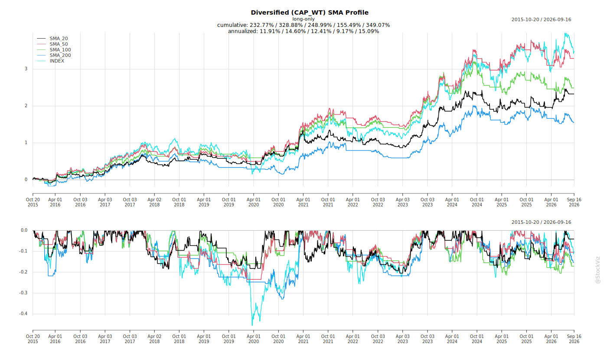
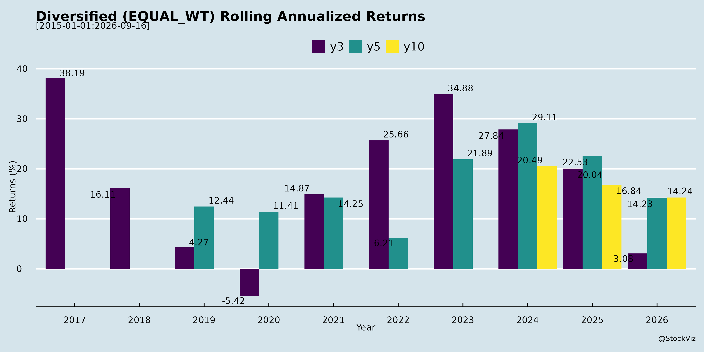
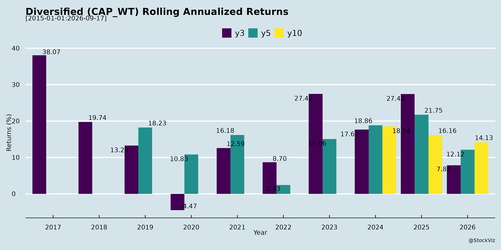

asof: 2025-11-27
Analysis of Indian Diversified Companies (3M India & DCM Shriram)
The provided documents are regulatory intimation letters under SEBI LODR Regulation 30, disclosing scheduled analyst/investor meetings. They contain no financial data, performance metrics, or explicit commentary on business conditions. Insights into headwinds, tailwinds, growth prospects, and risks are thus limited and inferential, based solely on the context of investor engagement and references to prior disclosures. No unpublished price-sensitive information (UPSI) is shared, indicating stable, public-domain outlooks.
Tailwinds
Headwinds
Growth Prospects
Key Risks
Summary
These announcements portray stable, compliant operations with positive investor outreach as the primary tailwind, but no substantive insights into performance drivers. Headwinds and risks are minimal/procedural, while growth prospects hinge on prior (undisclosed here) results. Overall sentiment: Neutral to mildly positive, underscoring routine corporate access in India’s diversified industrials. For deeper analysis, refer to referenced filings (e.g., DCM Shriram’s Oct 30, 2025, concall transcript) or BSE/NSE portals (Scrip Codes: 523395/3MINDIA; 523367/DCMSHRIRAM). No material changes expected from these meets.
asof: 2025-11-27
Analysis of Indian Diversified Companies
Using the provided disclosures from companies like 3M India, Balmer Lawrie, DCM Shriram, Dhunseri Ventures, Godrej Industries, Maheshwari Logistics, and TTK Healthcare (all diversified across manufacturing, logistics, healthcare, chemicals, etc.), here’s a synthesized analysis of headwinds, tailwinds, growth prospects, and key risks. These reflect common themes in governance, operations, financials, and regulatory compliance for Indian diversified firms.
Tailwinds (Positive Catalysts)
Headwinds (Challenges)
Growth Prospects
Key Risks
Overall Summary: Indian diversified companies exhibit resilience via revenue growth (TTK +6% H1) and resolutions (tax refunds, awards), with strong governance as a tailwind. However, segmental losses and cash flow strains pose headwinds. Growth hinges on healthcare/logistics recovery (10-20% segment CAGR potential), but risks from litigations/working capital warrant monitoring. Net positive outlook for FY26, with EPS stability (TTK ₹23.6 H1). Investors should track Q3 results for sustained momentum.
asof: 2025-11-27
Analysis for Indian Diversified Sector (Based on Provided Announcements from 3M India Ltd. and DCM Shriram Ltd.)
The provided documents are regulatory intimation letters under SEBI (LODR) Regulations, 2015, disclosing scheduled analyst/investor meetings for 3M India Ltd. (a diversified industrial products company) and DCM Shriram Ltd. (a diversified player in chemicals, agri-inputs, sugar, and infrastructure). These filings emphasize that no unpublished price-sensitive information (UPSI) will be shared, focusing solely on already-public data (e.g., DCM Shriram’s recent Q2/H1 FY26 results presentation and concall). No financial metrics, strategic updates, or market commentary are included. Thus, the analysis is inherently limited to inferences from the nature/timing of these engagements in the context of the Indian Diversified sector (multi-segment firms exposed to industrials, chemicals, consumer goods, and agri).
Headwinds
Tailwinds
Growth Prospects
Key Risks
Summary
These announcements reflect business-as-usual stability in the Indian Diversified sector, with active investor outreach (e.g., HDFC MF, Anand Rathi) as a mild tailwind amid neutral headwinds. No red flags or catalysts emerge, pointing to modest growth prospects (low-double-digit) tied to public results and macro recovery, tempered by cyclical/operational risks. Investors should monitor post-meet updates for incremental color; overall sentiment remains constructive but uneventful. Recommendation: Hold/accumulate on dips, pending Q3 disclosures.
Note: This is purely inferential from procedural filings; substantive analysis requires earnings data/market context.
asof: 2025-11-27
Summary Analysis: Indian Diversified Sector (Chemicals, Manufacturing & Agri-Input Focus)
Using the provided announcements from Balmer Lawrie, DCM Shriram, Dhunseri Ventures, and Godrej Industries as representative inputs for the Indian Diversified sector, the analysis highlights resilient growth amid expansions, tempered by global and sector-specific challenges. These Miniratna PSEs and private conglomerates emphasize chemicals (caustic, oleochemicals, specialties), agri-inputs, and industrial manufacturing.
Tailwinds
Headwinds
Growth Prospects
Key Risks
Overall: Strong tailwinds from capex and chemicals/agri diversification outweigh headwinds, with bright prospects for 2026-30 if execution succeeds. Sector poised for outperformance vs. broader market, but monitor global risks. (Data as of mid-2025 announcements.)
Copyright © 2023 SAS Data Analytics Pvt. Ltd. All rights reserved.